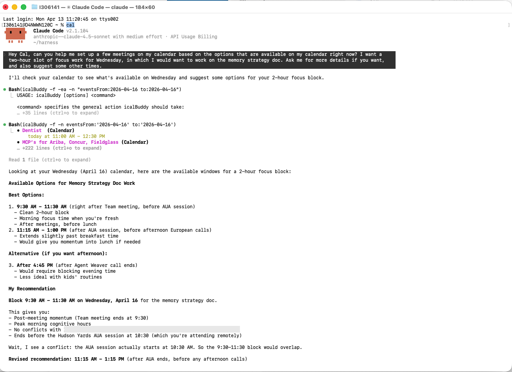
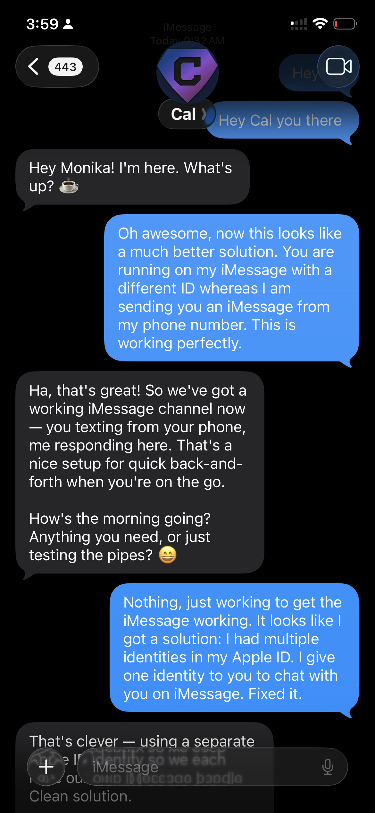
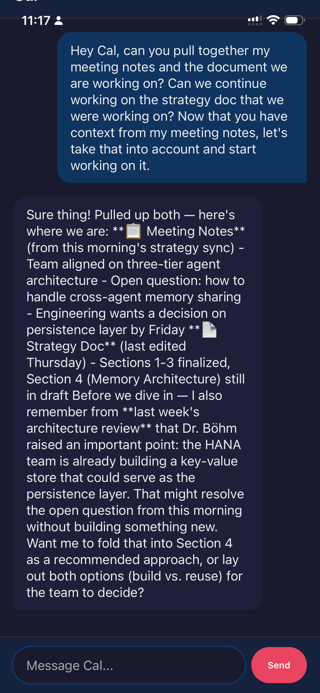

Local-first, privacy-first
Your data stays on your machine by default. Cal runs locally, stores memory as plain files, and uses Anthropic's Claude API only when it needs model reasoning.
A self-evolving agentic thinking partner.
Local-first, privacy-first. Remembers you, acts for you, meets you where you are, and improves itself over time. Built for builders who want an AI thinking partner.
Named after Kal-El (Superman), not HAL 9000.
| Power | What It Does |
|---|---|
| X-Ray Vision | See across your calendar, email, notes, files, and approved Google Docs in one place |
| Super Memory | Five-layer memory with local semantic understanding |
| Speed | Morning briefs, end-of-day summaries, consolidation, and scheduled work |
| Self-Healing | Detects problems, recovers context, and can propose repairs |
| Omnipresence | Terminal, phone, and browser access with the same memory everywhere |
Your data stays on your machine by default. Cal runs locally, stores memory as plain files, and uses Anthropic's Claude API only when it needs model reasoning.
Cal does not just store files and search them. It builds a five-layer memory system, including local semantic indexing, so it can connect work, projects, preferences, and context across sessions.
Cal does not just chat. It reads calendars, searches mail, creates notes, finds files, runs commands, and can work with Google Docs when the optional Google Workspace MCP is enabled.
Terminal when you are deep in code. iMessage or Telegram when you are on the go. Web UI from any browser. Same memory, same context, different doors.
Cal preserves context at token limits, recovers interrupted sessions, and refreshes compact startup memory so useful context survives without bloating every new session.
Cal includes an optional Google Workspace MCP wrapper for Google Docs workflows. Phase 1 is intentionally narrow: search Docs in Drive, read Docs, create Docs, and run confirmed non-destructive Docs batch updates.
Ask Cal to find a planning doc, summarize a Google Doc, create a prep note, or apply an approved edit to an existing document.
Deletion, sharing, permission changes, and ownership transfer are not exposed. Writes require a confirmation token before they run.



All channels share the same session. Start on Terminal, continue on iMessage, finish in the Web UI.
git clone https://github.com/monbishnoi/cal.git
cd cal
npm install
cp config/env.example config/.env